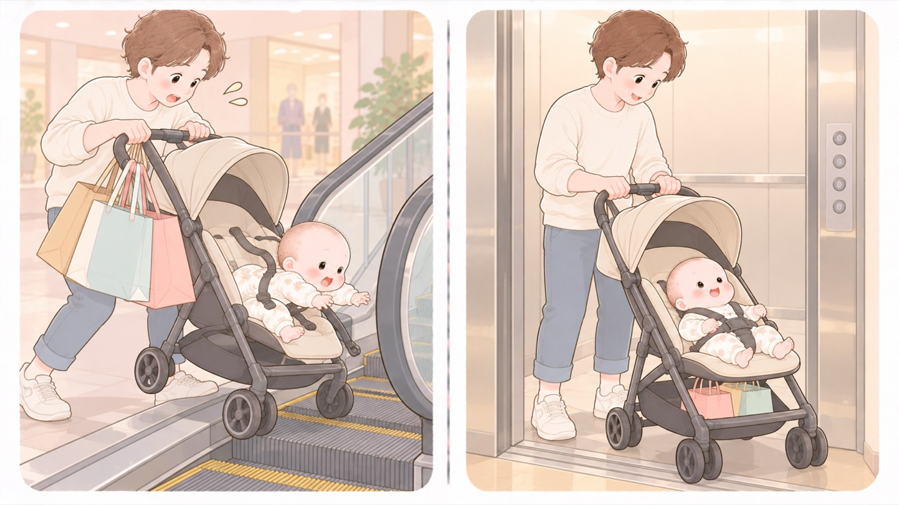

階を移るとき
ベビーカーとエスカレーター
乗せたままエスカレーターと階段を使わない。0歳が10段下まで転落した事例がある
外出の距離が伸びて、駅や商業施設で階を移ることが増えます。エスカレーターの乗り口と降り口には段差があり、車輪が引っかかると車体が傾きます。傾いた先が階段状なので、落ちた子は何段も下まで転がります。消費者庁は、子どもを乗せたままエスカレーターや階段を利用しない、エレベーターを利用する、としています。

- しないこと：子どもを乗せたまま、エスカレーターと階段を使わない
エレベーターを使います。目的の階に止まらないときは、もう一度待つか、別のエレベーターを探します。エレベーターが目的の階に止まらなかったことが、事例の出発点でした。 - すること：短い移動でも、シートベルトをしっかり締める
消費者庁は、転落などの事故を防ぐためシートベルトは必ず装着するよう求めています。事例の子どももベルトをしていませんでした。 - しないこと：ハンドルに荷物を掛けない
消費者庁は、荷物はベビーカーごとに決められた収納場所に入れるよう求めています。ハンドルに掛けると、荷物の重みで後ろへ倒れます。エスカレーターや駅の乗り口は段差があるので、前輪を上げるときに荷物の重みが後ろにかかり、思ったように持ち上がりません。荷物は下のかごに入れます。 - しないこと：子どもを乗せたまま、ベビーカーから離れない
止めて少し離れるあいだに、傾斜で動き出します。 - すること：開閉する前に、抱いている子を下ろし、上の子を離れた位置に立たせる
折りたたみの関節に指をはさみます。片手で抱いたまま開閉すると、ロックがかかりきらないまま子どもを乗せることになります。 - すること：使う前にひと押しして、ブレーキとロックを確かめる
ブレーキが効くか、たたむときのロックがかかるか、車輪が片方だけ重くなっていないか。譲られた製品や中古は、型番でリコールの対象になっていないかも調べます。 - すること：買うときは、子供PSCマークと対象年齢の表示を見る
2026年7月からベビーカーは子供PSCマークPSCマークのうち、主に子どもが使う製品を対象にしたもの。2025年12月に3歳未満向けおもちゃとベビーベッドで、2026年7月にベッドガードとベビーカーで表示が義務になった。国の技術基準への適合と、対象年齢・警告表示の表示が求められる。の対象になり、国の技術基準への適合と、対象年齢・警告表示の表示が義務になりました。ただし施行から2年間は経過措置なので、2028年7月まではマークのない在庫も売られています。
何が起きたか（消費者庁 Vol.627）
保護者が0歳の子をベビーカーに乗せ、施設で別の階へエレベーターで移動しようとしたところ、 目的の階に止まらなかったため、下りエスカレーターを利用しました。
「乗る際に、ベビーカーが引っかかり、シートベルトをしていなかった子どもが 投げ出されて10段下まで転落した」。救急搬送され、 頭蓋内損傷のため入院となりました。
消費者庁は、別の号でも「ベビーカーでのエスカレーターの利用は絶対にしないで下さい」と 書いています。
🛍 グッズの選び方
PR- 荷物を掛ける場所がないと、ハンドルに掛けてしまいます。下のかごに入りきらない分を収める袋があると、後ろへ倒れません。
- かごが浅い製品では、かごの形に合う袋かを寸法で確かめます。はみ出すと、結局ハンドルに掛けることになります。
- 片手で開け閉めできるものだと、もう片方の手を赤ちゃんに添えたままにできます。
- ベビーカー用 アンダーバッグ（下かご収納）下かごを増やす。ハンドルに掛けずに済むAmazonで見る →（新しいタブで開きます）
- 10mois ワンタッチおむつポーチ（フラップ付き）フラップが開いて、替える面になるAmazonで見る →（新しいタブで開きます）
- ケラッタ 使い捨ておむつ替えシート（防水・50枚）使い捨て。台の汚れを気にせず敷けるAmazonで見る →（新しいタブで開きます）
- La Kissa おむつ替えシート 35×45cm（防水・洗える）小さめ。かばんに常備できるAmazonで見る →（新しいタブで開きます）
- MOMSMENU おむつ替えシート 30×45cm 2枚（防水・滑り止め付き）滑り止め付き。台の上でずれないAmazonで見る →（新しいタブで開きます）
- Liscia ベビーカー サンシェード（メッシュ・虫よけ兼用）メッシュ。日よけと虫よけを兼ねるAmazonで見る →（新しいタブで開きます）
リンクはAmazonアソシエイトリンクです。当サイトはアフィリエイトプログラムに参加しています。Amazonのアソシエイトとして、当サイトは適格販売により収入を得ています。 選び方の方針
この項目の根拠
- こども安全メール Vol.627 ベビーカーからの転落などに注意！─安全な使用の心がけと周囲の協力を─（消費者庁）（新しいタブで開きます）
施設で別の階にエレベーターで移動しようとしたが目的の階に止まらなかったため下りエスカレーターを利用し、乗る際にベビーカーが引っかかり、シートベルトをしていなかった0歳の子どもが投げ出されて10段下まで転落し、救急搬送され頭蓋内損傷のため入院となった事例。シートベルトをしっかり締めること。子どもをステップや座席の上に立たせないこと。荷物はベビーカーごとに決められた収納場所に入れること。子どもを乗せたままエスカレーターや階段は利用せず、エレベーターを利用すること。ベビーカー開閉時にはそばに子どもがいないことを確認すること。本体や部品にがたつきや亀裂などの不具合がないか日常的に点検し、リコール対象でないか確認すること。不安定な場所に置かないこと。段差や溝、傾斜に注意して使用すること。 - こども安全メール Vol.599 エスカレーターでの事故に注意！（消費者庁）（新しいタブで開きます）
ベビーカーでのエスカレーターの利用は絶対にしないこと。 - みんなの消費安全ナビ Vol.689 乳幼児用ベッドガードとベビーカーを購入する際には「子供PSCマーク」の表示を確認しましょう！（消費者庁）（新しいタブで開きます）
令和8年（2026年）7月8日に乳幼児用ベッドガードとベビーカーが子供PSCマークの対象製品として追加され、ベビーカーについては施行の日から2年間の経過措置期間があること。国の技術基準に適合し、対象年齢や使用上の注意に関する警告表示をすることが必要になったこと。